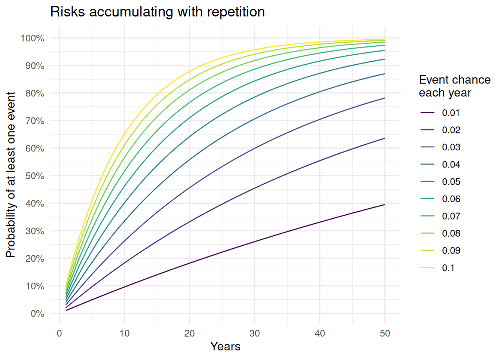

![]()
I like to climb. Sometimes when talking with other climbers I get the impression that they are blasé about risk, especially for things that are a little bit dangerous, but not outright scary.
When we take small risks repeatedly, that risk accumulates. Suppose you are setting up an anchor at the top of a climb, and you don’t tether into something secure, so there’s a 2% chance you fall while you work. If you take this risk 20 times, the probability that you fall off a cliff at least once is 33%. That’s really high. Far too high for me.
The numbers above are made up, but the point is that I’m hoping to climb outside for a long time. Climbing is dangerous, and I have a certain risk budget that I am willing to allocate to climbing because I enjoy it. Sometimes I’ll even do big risky things! But it’s important to me that I don’t exceed my risk tolerance, and I suspect I am most likely to that by accumulating small risks without paying attention.
Diatribe aside, I find myself referring back to this figure on a regular basis, and I’m posting it here so that I can point other people to some rough numbers as well.
Code
library(tidyverse)
p_at_least_one_event <- function(p_event = 0.1, periods = 50) {
tibble(
time = 1:periods,
# equivalently: 1 - pbinom(0, 1:periods, p_event)
p_at_least_one_event = 1 - (1 - p_event)^(1:periods)
)
}
tibble(
p_event = seq(0.01, 0.1, by = 0.01)
) |>
mutate(
curve = map(p_event, p_at_least_one_event),
p_event = forcats::fct_inseq(as.factor(p_event))
) |>
unnest(c(curve)) |>
ggplot(aes(time, p_at_least_one_event, color = p_event)) +
geom_line() +
scale_color_viridis_d() +
scale_y_continuous(
breaks = seq(0, 1, by = 0.1),
labels = scales::percent
) +
labs(
title = "Risks accumulating with repetition",
x = "Years",
y = "Probability of at least one event",
color = "Event chance\neach year"
) +
theme_minimal(12)